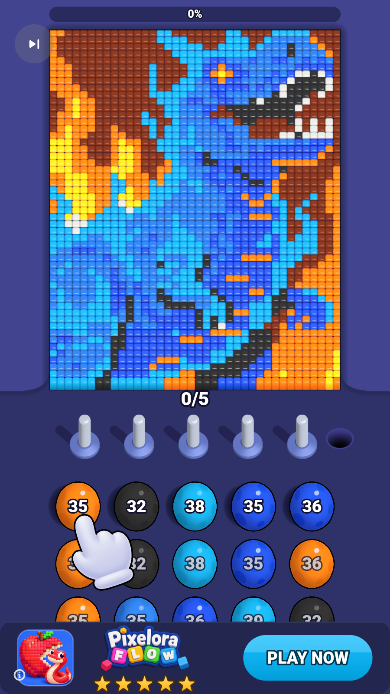

Quảng cáo (rewarded, inter, banner, app open)
Mô tả
- Quảng cáo đi qua AppLovin MAX (live:
reward/inters/banner= 2 = Max; mrec, app open, app switch = 0 = tắt). - Rewarded có 6 chỗ: nhân gem thắng, hồi sinh (save-me), booster hết lượt, tăng tốc 2x, +1 tim và Daily Rewards.
- Interstitial chạy sau màn thắng từ level 15 (profile BLD), cách nhau 180 s (120 s từ level 30), bị chặn nếu vừa mua IAP trong phiên.
- Banner chỉ ở trong màn, từ khi thắng đủ 11 màn (BLD). Mua No Ads tắt inter + banner, giữ rewarded.
- Cách chạy phụ thuộc profile chiến dịch (BLD / AdsROAS / IAP) chọn theo tên chiến dịch AppsFlyer; phân nhóm theo người chơi xem trang AdSegmentation.
Thiết kế chi tiết
Tóm tắt thiết kế
- Live 16/11 Server chỉ ghi đè
ads_network_config= {mediation 1, reward 2, inters 2, mrec 0, banner 2, appOpen 0, appSwitch 0}: toàn bộ qua AppLovin MAX, không MREC, không app open. - APK Luật inter nằm trong profile chiến dịch: BLD (mặc định) từ level 15 / cap 180 s, AdsROAS từ level 10 / cap 120 s, IAP từ level 50 / cap 350 s và không banner.
- Code Inter chỉ chạy khi qua đủ 6 cổng: level >= interFromLv, đủ số màn chơi trong phiên, đủ màn từ lần inter trước, hết thời gian cap, không bị chặn (cheat), và (BLD) chưa mua IAP trong phiên.
- Playtest Inter bắt đầu sau Day 15 (Day 16, 17, 18, 19); có playable không có nút X (AppLovin), có playable skip được sau 12 s (Unity Ads); sau inter hiện popup Remove Ads 8,99 $.
- Code Rewarded có 6 chỗ đặt; mua No Ads chỉ tắt inter + banner, giữ rewarded ("Keep optional ads for rewards").
- Nhận định Dùng popup Remove Ads làm "van" sau inter: người chơi bị làm phiền bởi playable rồi thấy ngay giải pháp bán tiền.
Luồng người chơi từng bước
- Chọn profileHệ thống Code
ResolveCampaignProfilekhớp từ khoá chiến dịch AppsFlyer, mặc định BLD. - Banner trong mànGiao diện PlaytestTừ khi thắng đủ 11 màn, banner hiện dưới đáy màn chơi.

Day 13: banner quảng cáo dưới đáy màn chơi - Thắng màn, bấm gemNgười chơi PlaytestNhận +20 gem rồi interstitial chạy ngay (từ Day 16).

Day 16: interstitial sau khi bấm nút gem ở màn thắng 
Video ad Install ở Day 16 (AppLovin) - Popup Remove AdsGiao diện PlaytestVề Home, popup Remove Ads 8,99 $ bật sau inter.

Popup Remove Ads 8,99 $ hiện sau quảng cáo (Day 15 -> 16) - Rewarded tự nguyệnNgười chơi PlaytestNút Free (ad) ở Daily Rewards, +1 tim, Out of Slots, booster.

Daily Rewards: các nút Free (ad) cạnh nút Claim 50 gem 
Day 15: inter đầu tiên (playable Mintegral) hiện sau màn thắng Super Hard
Rewarded: mọi chỗ đặt và thưởng
| Chỗ đặt | Lớp / method | Placement | Thưởng |
|---|---|---|---|
| Nút gem màn thắng | UIEndGameWin.OnClickNextRewardAdsBonus | end_game_win (rewarded_ad_bonus) | Nhân gem thắng |
| Out of Slots | UIPopupBoosterSaveMeBase.ShowSaveMeAds | ingame / save_me | Hồi sinh miễn phí |
| Booster hết lượt | UIInLevelCakeOrder.ApplyUseBooster | booster_unused_ad_reward | 1 lượt booster |
| Tăng tốc 2x | UIPopupBuySpeedUp.OnClickWatchAds | ingame / speed_up | +8 phút 2x |
| More Lives | UIPopupHeartRefill.OnClickUseAds | heart_refill / ads_heart | +1 tim |
| Daily Rewards | UIPopupDailyRewards.ClaimOnline | daily_reward (ads_daily_reward) | 100 / 150 / 200 gem hoặc vô hạn 15 phút |
Xác nhận mã: tất cả đi qua SceneMainUI.ShowAdsReward -> AdsManager.ShowVideo.
Ba profile quảng cáo (RC default)
| Tham số | BLD (mặc định) | AdsROAS | IAP |
|---|---|---|---|
| interFromLv | 15 | 10 | 50 |
| interCapTime (s) | 180 (120 từ level 30) | 120 | 350 |
| interLoseFromLv | -1 (tắt) | 30 | 0 (dùng 30) |
| interQuitMidgameFromLv | -1 (tắt) | 0 (dùng 30) | 0 (dùng 30) |
| isBlockInterAfterIap | 1 | 0 | 0 |
| isBannerDisabled / bannerFromLv | 0 / 11 | 0 / 2 | 1 / 0 |
| rewardInGameMaxPerLv | -1 | 1 | -1 |
| isWinBonusRewardDisabled | 1 | 0 | 1 |
| removeAdsPopupAfterInter / EveryInter | 1 / 5 | 0 / 0 | 0 / 0 |
Nguồn: ads_campaign_bld / adsroas / iap. Giá trị 0 ở interLose / interQuit nghĩa là rơi về ads_inter_config (30); số âm nghĩa là tắt (AdsManager.IsAllowInterQuitLoseGame).
Cổng của interstitial (AdsManager.IsPassInterRules)
| Cổng | Điều kiện | Giá trị BLD |
|---|---|---|
| Level | MaxMainLvIndexWinned >= interFromLv (profile) hoặc passLvRq | 15 |
| Số màn trong phiên | CountLvPlayedInSession >= showAfterNumPlay | 0 |
| Khoảng cách màn | >= capNumLv màn kể từ inter trước | 0 |
| Thời gian | now >= _nextTimeAllowShowInter (cap 180 s; 120 s từ level 30) | 180 / 120 s |
| Sau IAP | isBlockInterAfterIap: chặn nếu mua IAP trong phiên | 1 (bật) |
| Chặn ngoài | InterBlockReason rỗng (hook cheat) | - |
Phần liên quan segment (cap theo 24 giờ, theo mức chi tiêu) chuyển sang trang AdSegmentation.
Vận dụng cho game khác
- Đưa luật quảng cáo vào profile theo nguồn user (organic / ROAS / IAP) để mỗi nhóm có mật độ quảng cáo riêng không cần build mới.
- Gắn popup bán Remove Ads vào nhịp interstitial (sau inter đầu, mỗi 5 inter) thay vì hiện ngẫu nhiên.
- Giữ rewarded sau khi mua No Ads: người trả tiền vẫn có lý do tự nguyện xem quảng cáo để lấy thưởng.
Bảng tổng hợp mọi tính năng đã làm chi tiết: FoodiePop_ThietKeChiTiet.xlsx.
Mở khóa & điểm vào
Inter: interFromLv của profile (BLD 15, AdsROAS 10, IAP 50; thiếu thì ads_inter_config.passLvRq = 10). Banner: bannerFromLv (BLD 11, AdsROAS 2) hoặc ads_banner_config.passLvRq = 10. Rewarded: không có ngưỡng level (khi có quảng cáo sẵn sàng).
Điểm vào:
- Nút có icon video: Daily Rewards, More Lives (+1 tim), Out of Slots (hồi sinh), booster hết lượt, nút 2x tăng tốc, nút gem trên màn thắng
- Interstitial tự chạy sau khi bấm nút gem ở màn thắng, khi về Home, khi Leave / Retry
- Banner dưới đáy màn chơi
- Popup Remove Ads sau interstitial
Cách hoạt động
AdsManagerkhởi tạo: đọcads_network_config,ads_inter_config,ads_banner_config,ads_reward_configvàads_campaign_config; chọn profile (ResolveCampaignProfile) theoaf_campaign_name.- Vào màn:
SceneMainUI.RequestBannergọiAdsManager.ShowBannernếuIsPassedLvRqToShowBanner, profile không tắt banner và đang trong màn. - Rewarded: UI gọi
SceneMainUI.ShowAdsReward; không mạng hiện toast_require_internet, chưa sẵn sàng hiện toast_ad_not_ready, còn lạiAdsManager.ShowVideo. - Interstitial:
SceneMainUI.ShowAdsInter/LevelPlayLoadAndSetupControl.ShowInterOnLeaveEndGame->AdsManager.IsPassInterRules->ShowInter(Max). - Cap: ghi
_nextTimeAllowShowInter= now +GetInterCappingSeconds. - Mua No Ads:
UpdateOnRemoveAdstắt inter / banner / AOA, rewarded vẫn chạy.
Ảnh chụp
Bấm ảnh để phóng to, dùng phím ← → để chuyển ảnh. Nhãn màu cho biết nguồn bằng chứng của ảnh.


Phần thưởng
| Ngữ cảnh | Phần thưởng | Evidence |
|---|---|---|
| Màn thắng (rewarded_ad_bonus) | Nhân gem thắng | UIEndGameWin.OnClickNextRewardAdsBonus |
| Out of Slots (save_me) | Hồi sinh miễn phí | UIPopupBoosterSaveMeBase.ShowSaveMeAds |
| Booster hết lượt (booster_unused_ad_reward) | 1 lượt booster | UIInLevelCakeOrder.ApplyUseBooster |
| Tăng tốc (speed_up) | 2x thêm 8 phút | UIPopupBuySpeedUp.OnClickWatchAds |
| More Lives (ads_heart) | +1 tim | UIPopupHeartRefill.OnClickUseAds |
| Daily Rewards (ads_daily_reward) | 100 / 150 / 200 gem hoặc tim vô hạn 15 phút | UIPopupDailyRewards.ClaimOnline |
Số liệu chính
| Chỉ số | Giá trị | Nguồn |
|---|---|---|
| Mạng (live) | Max cho reward / inter / banner; mrec, app open tắt | ads_network_config (Live 16/11) |
| Inter từ level (BLD) | 15 | ads_campaign_bld.interFromLv |
| Cap giữa hai inter (BLD) | 180 s; 120 s từ level 30 | interCapTime / interCapByLv |
| Banner (BLD) | từ level 11, chỉ trong màn | bannerFromLv |
| Popup Remove Ads (BLD) | sau inter đầu, rồi mỗi 5 inter | removeAdsPopupAfterInter / EveryInter |
| Tăng tốc bằng quảng cáo | +8 phút | speed_up_config.adsMinutes |
Use case (14)
Bấm vào từng use case để mở. Mở/đóng tất cả
UC-01 Nhân gem thắng bằng quảng cáo
Các bước- UIEndGameWin.OnClickNextRewardAdsBonus
- ShowVideo (placement end_game_win, reward gem)
- OnRewardEarned cộng gem bonus
| Actor | Player |
|---|---|
| Trigger | Bấm nút thưởng có quảng cáo ở màn thắng |
| Điều kiện | isWinBonusRewardDisabled = 0 (BLD đặt 1) và level >= lvShowBonusAds 3 |
| Kết quả | Nhận gem cộng thêm |
| Quy tắc / số liệu | Playtest Day 15 (Super Hard): 100 gem là thưởng thắng Super Hard (rwWinByDifficulty 20/60/100, 440 -> 540); quảng cáo hiện ngay sau đó là inter đầu tiên (mốc interFromLv 15 của BLD), chạy trong activity Mintegral dùng chung cho inter |
| Evidence | UIEndGameWin.OnClickNextRewardAdsBonus |
UC-02 Hồi sinh Out of Slots bằng quảng cáo
Các bước- UIPopupBoosterSaveMeBase.ShowSaveMeAds (placement ingame / save_me)
- UIInLevelCakeOrder.ShowBoosterOrSaveMeRewardAds
| Actor | Player |
|---|---|
| Trigger | Bấm nút quảng cáo trong popup hồi sinh |
| Điều kiện | Còn lượt save-me, save_me_config.maxAds = 99 |
| Kết quả | Cứu ván mà không tốn gem |
| Quy tắc / số liệu | Giới hạn rewardInGameMaxPerLv của profile (BLD -1, AdsROAS 1); mặc định ads_reward_config.maxPerLv = 1 |
| Evidence | UIPopupBoosterSaveMeBase.ShowSaveMeAds |
UC-03 Nhận booster bằng quảng cáo
Các bước- UIInLevelCakeOrder.ApplyUseBooster
- Rewarded (lý do booster_unused_ad_reward)
| Actor | Player |
|---|---|
| Trigger | Bấm booster hết lượt |
| Điều kiện | Booster mở khoá, hết lượt |
| Kết quả | Được 1 lượt booster |
| Quy tắc / số liệu | booster_config.maxAds = 99 |
| Evidence | UIInLevelCakeOrder.ApplyUseBooster |
UC-04 Tăng tốc 2x bằng quảng cáo
Các bước- UIPopupBuySpeedUp.OnClickWatchAds (placement ingame / speed_up)
| Actor | Player |
|---|---|
| Trigger | Bấm Watch Ads ở popup tăng tốc |
| Điều kiện | speed_up_config.canUseAds = 1 |
| Kết quả | Kích hoạt 2x thêm adsMinutes = 8 phút |
| Quy tắc / số liệu | 5 phút đầu miễn phí không cần quảng cáo (freeMinutes = 5, Playtest đếm 04:59) |
| Evidence | UIPopupBuySpeedUp.OnClickWatchAds |
UC-05 Xem quảng cáo +1 tim
Các bước- UIPopupHeartRefill.OnClickUseAds (placement heart_refill, ads_heart)
- AddHeart(1)
| Actor | Player |
|---|---|
| Trigger | Bấm +1 heart FREE |
| Điều kiện | Có rewarded |
| Kết quả | +1 tim |
| Quy tắc / số liệu | AdsPosition.RecoverHeart |
| Evidence | UIPopupHeartRefill.OnClickUseAds |
UC-06 Quà Daily Rewards bằng quảng cáo
Các bước- UIPopupDailyRewards.ClaimOnline (placement daily_reward)
- LiveOpBehaviorDailyReward.ReceiveRewards (ads_daily_reward)
| Actor | Player |
|---|---|
| Trigger | Bấm nút Free (ad) |
| Điều kiện | Có rewarded |
| Kết quả | 100 / 150 / 200 gem hoặc tim vô hạn 15 phút |
| Quy tắc / số liệu | AdsPosition.DailyReward |
| Evidence | UIPopupDailyRewards.ClaimOnline |
UC-07 Interstitial sau màn thắng
Các bước- ShowInterOnLeaveEndGame
- AdsManager.ShowInter (Max)
- Ghi _nextTimeAllowShowInter
| Actor | System |
|---|---|
| Trigger | Sau khi bấm nút gem ở màn thắng |
| Điều kiện | IsPassInterRules đúng |
| Kết quả | Hiện video / playable toàn màn hình, sau đó về Home |
| Quy tắc / số liệu | Playtest: bắt đầu từ Day 16 (sau Day 15); Day 13–14 không có |
| Evidence | LevelPlayLoadAndSetupControl.ShowInterOnLeaveEndGame |
UC-08 Interstitial khi thua / Leave giữa màn
Các bước- ShowInterOnQuitMidGame / ShowInterOnLeaveLevel
- AdsManager.IsAllowInterQuitMidgame
| Actor | System |
|---|---|
| Trigger | Leave / thua |
| Điều kiện | IsAllowInterQuitMidgame / IsAllowInterQuitLoseGame |
| Kết quả | Có thể hiện inter khi thoát |
| Quy tắc / số liệu | Profile BLD đặt -1 (tắt); AdsROAS lose từ level 30; IAP / mặc định dùng ads_inter_config.interQuitMidgame / interQuitLoseGame = 30 |
| Evidence | AdsManager.IsAllowInterQuitMidgame |
UC-09 Interstitial về Home
Các bước- HomeControllerCookOrder.ShowAdsInter (placement home)
- SceneMainUI.ShowAdsInter
| Actor | System |
|---|---|
| Trigger | Home bật từ màn chơi |
| Điều kiện | Qua luật inter |
| Kết quả | Hiện inter trước khi mở popup starter / noads |
| Quy tắc / số liệu | Chuỗi starter, starter_sale, noads đi kèm (thứ tự popup sau inter) |
| Evidence | HomeControllerCookOrder.ShowAdsInter |
UC-10 Banner trong màn
Các bước- SceneMainUI.RequestBanner
- AdsManager.ShowBanner (Max)
| Actor | System |
|---|---|
| Trigger | Vào màn |
| Điều kiện | Đã thắng đủ bannerFromLv, profile không tắt banner, chưa No Ads |
| Kết quả | Banner dưới đáy; mẫu Playtest: Binance, Grab, Shopee / Meta |
| Quy tắc / số liệu | Chặn với log: not on Home for campaign, disabled by campaign, winned N level(s) require M |
| Evidence | AdsManager.ShowBanner |
UC-11 Mua No Ads
Các bước- InAppShopDataAccess.ApplyRemoveAdsToAdsSystem
- AdsManager.UpdateOnRemoveAds
| Actor | Player |
|---|---|
| Trigger | IAP removeads / bundle |
| Điều kiện | - |
| Kết quả | Tắt inter, banner, AOA; rewarded giữ |
| Quy tắc / số liệu | "Skip inter: Remove or Cheat Ads" |
| Evidence | AdsManager.UpdateOnRemoveAds |
UC-12 Phát hiện banner tự chuyển hướng
Các bước- BannerRedirectGuard.Tick theo dõi cửa sổ nghi ngờ
- Log ad_banner_redirect_suspect kèm network, creative, dsp
| Actor | System |
|---|---|
| Trigger | Bấm / mở rộng banner, mua IAP ngay sau |
| Điều kiện | r1plugin_banner_guard_enable bật |
| Kết quả | Chỉ ghi nhận analytics, không chặn |
| Quy tắc / số liệu | Cửa sổ r1plugin_banner_guard_window (giây) |
| Evidence | BannerRedirectGuard.Tick |
UC-13 Chọn profile theo chiến dịch
Các bước- AdsManager.ResolveCampaignProfile
- AdsCampaignConfig.ResolveProfileId khớp từ khoá (BLD, AdsROAS / ROAS, IAP)
- Đọc ads_campaign_<id>
| Actor | System |
|---|---|
| Trigger | Khởi động / AppsFlyer trả dữ liệu |
| Điều kiện | ads_campaign_config có routes |
| Kết quả | Mỗi nguồn user có luật inter / banner khác |
| Quy tắc / số liệu | Mặc định BLD |
| Evidence | AdsManager.ResolveCampaignProfile |
UC-14 Rewarded lỗi / không mạng
Các bước- SceneMainUI.ShowAdsReward kiểm tra mạng và IsRewardAvailable
| Actor | System |
|---|---|
| Trigger | Bấm nút quảng cáo |
| Điều kiện | - |
| Kết quả | Toast toast_require_internet hoặc toast_ad_not_ready |
| Quy tắc / số liệu | Quảng cáo kẹt (không có nút X) buộc phải force-stop ở Playtest Day 16 và 19 |
| Evidence | SceneMainUI.ShowAdsReward |
Cấu hình (21)
Gộp mọi nguồn: const trong code, giá trị mặc định trong APK, storage key, AB test, cờ server.
| Nguồn | Key | Kiểu | Giá trị | Ý nghĩa | Nơi định nghĩa |
|---|---|---|---|---|---|
| server info | ads_network_config | json | {mediation:1, reward:2, inters:2, mrec:0, banner:2, appOpen:0, appSwitch:0, maxUseBackfill:0} | Mediation Max; reward / inter / banner dùng Max; mrec, app open, app switch tắt | Live 16/11 (frc_activate); trùng RC default |
| code const | AdsMediation / AdsPlatform | enum | AdsMediation: None 0, Max 1, Admob 2; AdsPlatform: None 0, Admob 1, Max 2 | Giải mã số trong ads_network_config | IapAdsSystem.AdsMediation, AdsPlatform |
| code const | AdsPosition | enum | NextLevel 1, Retry 2, ReturnHome 3, BreakAds 4, Booster 5, SaveMe 6, RecoverHeart 7, DailyReward 8 | Vị trí quảng cáo | IapAdsSystem.AdsPosition |
| code const | BannerPosition / AOAAdsPosition | enum | Banner: Home 1, InGame 2; AOA: AppOpen 1, AppSwitch 2, FirsOP 3 | Vị trí banner / app open | IapAdsSystem |
| json default | ads_campaign_config | json | {defaultProfile:"BLD", routes:[BLD, AdsROAS (ROAS), IAP]} | Chọn profile theo từ khoá tên chiến dịch (af_campaign_name) | RC default |
| json default | ads_campaign_bld | json | interFromLv 15, interCapTime 180, interCapLv [30] -> interCapByLv [120], interLoseFromLv -1, interQuitMidgameFromLv -1, isBlockInterAfterIap 1, isBannerDisabled 0, bannerFromLv 11, rewardInGameMaxPerLv -1, isWinBonusRewardDisabled 1, removeAdsPopupAfterInter 1, removeAdsPopupEveryInter 5 | Profile mặc định (organic) | RC default |
| json default | ads_campaign_adsroas | json | interFromLv 10, interCapTime 120, interLoseFromLv 30, isBannerDisabled 0, bannerFromLv 2, rewardInGameMaxPerLv 1, isWinBonusRewardDisabled 0, removeAdsPopup* 0 | Profile user mua từ ROAS | RC default |
| json default | ads_campaign_iap | json | interFromLv 50, interCapTime 350, isBannerDisabled 1, rewardInGameMaxPerLv -1, isWinBonusRewardDisabled 1, removeAdsPopup* 0 | Profile user thiên về IAP: ít quảng cáo | RC default |
| json default | ads_inter_config | json | passLvRq 10, showAfterNumPlay 0, capNumLv 0, capTimeVidRw 120, capTimeDefault 180, lv [30], capByLv [120], interQuitMidgame 30, interQuitLoseGame 30, useMulticall 0 | Giá trị chung khi profile không ghi đè | RC default |
| json default | ads_banner_config.passLvRq | int | 10 | Số màn thắng cần để hiện banner nếu profile không đặt bannerFromLv | RC default |
| json default | ads_reward_config | json | {useMulticall: 0, maxPerLv: 1} | Giới hạn rewarded trong màn | RC default |
| json default | ads_mrec_config | json | {} | Không dùng MREC (mrec = 0) | RC default |
| json default | maxads_config | json | multiRv 0, multiInt 0, preload / timeout 0 | Không dùng multicall loader | RC default |
| json default | admob_config | json | buffInt 2, buffRv 2, buffBanner 2, buffMrec 2, buffAOA 0 ... | Cấu hình AdMob (không dùng: Max là nền chính) | RC default |
| json default | consent_config | json | {mode: 0, debugGeo: 0} | Chế độ consent | RC default |
| json default | reward_config.lvShowBonusAds / bonusMuls | int / int[] | 3 / [120, 150, 200] | Nút nhân gem bằng quảng cáo | RC default |
| json default | speed_up_config | json | speed 2, freeMinutes 5, activateMinutes 20, price 1200, canUseAds 1, adsMinutes 8 | Tăng tốc 2x | RC default |
| json default | r1plugin_banner_guard_enable / window | bool / giây | (không có trong RC default 1.15, đọc qua R1RemoteConfig) | Bật BannerGuard và cửa sổ nghi ngờ | BannerGuardConfig |
| code const | AdsManager.PrefKeyCampaignName | string | af_campaign_name | Tên chiến dịch AppsFlyer lưu cục bộ | AdsManager |
| code const | AdsCampaignProfile.FallbackProfileId | string | BLD | Profile dự phòng | AdsCampaignProfile |
| code const | AdsManager.DefaultAdHeightDp | float | 50 (iPad 90) | Chiều cao banner mặc định | AdsManager |
Backend / server
| Command | Chiều | Mục đích |
|---|---|---|
ads_network_config / ads_campaign_* / ads_inter_config / ads_banner_config / ads_reward_config | server→client | Chọn mạng, luật inter / banner / rewarded |
AppLovin MAX SDK | client→mạng quảng cáo | Tải và hiện rewarded, inter, banner (Mintegral, Unity Ads, AppLovin... thấy ở Playtest) |
AppsFlyer (af_campaign_name) | server→client | Quyết định profile quảng cáo |
Giao diện (UI)
| Element | Class | Mục đích |
|---|---|---|
| Banner an toàn | IapAdsSystem.UIAdBannerSafeArea | Chừa vùng dưới cho banner |
| Popup Remove Ads | CakeOrder.Shop.UIPopupRemoveAds | Bán No Ads sau quảng cáo |
| Nút gem màn thắng | CakeOrder.InGame.UIEndGameWin | Nút nhân thưởng bằng quảng cáo |
Analytics (8)
| Event | Tham số | Khi nào |
|---|---|---|
ads_reward_clicked / ads_reward_completed | button_name, placement (booster, daily_reward, endgame, heart_refill, ingame, replay, return_home, save_me, unknown), level; completed thêm reward_name (coin / gem), value | Bấm xem video thưởng (AdsManager.ShowVideo) / xem xong (callback thưởng của MAX và AdMob) |
ad_inter_show | placement, level | Inter hiện (AdsDataTracking.InterDisplay) |
ad_impression | ad_platform (admob / applovin), ad_source, ad_unit_name, ad_format, value, currency, placement | Doanh thu mỗi lần hiện quảng cáo (AdsDataTracking.RevenueDefault) |
af_inters_logicgame / af_inters_successfullyloaded / af_inters_displayed / af_rewarded_logicgame / af_rewarded_successfullyloaded / af_rewarded_displayed / af_aoa_displayed / af_inters_aoa_displayed | af_quantity = 1 (AppsFlyer) | Game xin hiện / tải xong / hiện inter, video thưởng, quảng cáo mở app |
ad_impression_abi / logAdRevenue (AppsFlyer), ImpressionLevelAdRevenue (TikTok) | ad_platform applovin, ad_source, ad_unit_name, ad_format, value, currency USD, placement | Doanh thu quảng cáo MAX / AdMob; TikTok chỉ khi có credentials |
watch_<mốc>_reward / watch_<mốc>_ads | value, currency, ad_counter (PlayerPrefs watch_rw / watch_int) | Bộ đếm lượt xem chạm một mốc của rwMilestones / adsMilestones |
ad_banner_click / ad_banner_expand / ad_banner_redirect_suspect | ad_source, ad_network_placement, ad_creative_id, ad_dsp, sec_since_load, trigger | BannerGuard ghi nhận |
seg_inter_block | reason (seg_daily_limit), limit, count24h, seg_spend, level | Segment chặn inter (xem AdSegmentation) |
Storage keys
af_campaign_name rewardedCompletedCount (SaveGameStats) gift_removeads numOfferRmAds
Còn thiếu / chưa xác minh
- Profile thật của máy Playtest không đọc được: giả định BLD (organic, defaultProfile) (Nhận định).
showBannerInHomevàrequireInternetToNextLevelcủa profile không có trong RC default: dùng mặc địnhCreateBuiltIn(chưa đọc).- Đã giải (bài ad-segmentation / sale-event-flows): quảng cáo sau nút 100 gem Day 15 là inter #1 (save ghi mốc inter 20:37:08, 1 giây sau lần bấm; 5 mốc inter cho 5 màn thắng Day 15–19), không phải rewarded — khớp
isWinBonusRewardDisabled = 1. - Interstitial đầu tiên Playtest ở Day 16 (sau Day 15), khớp interFromLv 15 nếu tính
MaxMainLvIndexWinned(suy luận). - Số lần rewarded tối đa mỗi màn (maxPerLv) không kiểm thử được.
- Quảng cáo playable không có nút X (AppLovin 'TAKEOUT ORDERS') là hành vi của mạng, không do client điều khiển.
- Live 16/11 chỉ ghi đè
ads_network_config; mọi key quảng cáo khác lấy giá trị mặc định APK (Nhận định).
Tính năng liên quan
Gói ưu đãi (starter, booster pack, remove ads) Cửa hàng & IAP Tim (mạng) Cứu màn (Save Me) Tăng tốc x2 Booster trong màn Quà hằng ngày (Daily Rewards) Phân nhóm người chơi & giới hạn quảng cáo (Segment) Tiền tệ: coin & gem Khởi động, quyền riêng tư & Play Games
Nguồn đã đọc
IapAdsSystem.AdsManager.cIapAdsSystem.AdsCampaignProfile.cIapAdsSystem.AdsCampaignConfig.cCakeOrder.BaseUI.SceneMainUI.cCakeOrder.InGame.UIEndGameWin.cCakeOrder.InGame.LevelPlayLoadAndSetupControl.c_GAME.BannerGuard.BannerRedirectGuard.cData/remote_config/frc_defaults_115.jsonData/remote_config/frc_activate_20261116.json_analysis/live/fp_20261116/RESULTS_LIVE.md